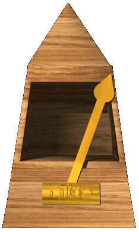

CPR -- LARYNGECTOMY / TRACHEOSTOMY
LARYNGECTOMY - Patients who have had a laryngectomy {the surgical removal of all or part of the larynx) have a
permanent opening at the base of their neck called a stoma, which connects the airway (trachea) to the skin of the neck.
Patients with a complete laryngectomy will have no air flow from the mouth and nose.
PARTIAL LARYNGECTOMY - In patients with a partial laryngectomy, there can be some airflow from the nose and mouth,
and the chest will not rise during ventilation. The caller must cover the patient's nose and mouth with one hand.
TRACHEOSTOMY - An artificial opening into the trachea through the neck. There can be some air flow from the nose and
mouth in these patients and the chest will not rise during ventilation unless the caller covers the patient's nose and mouth
with one hand.
For all of the above, the method of ventilation is to perform direct mouth-to-stoma ventilations. Do not instruct the caller
to tilt the patient's head back. Instead, keep the head straight.
- Does anyone there know CPR? (Trained bystanders may still need instructions)
- Is there an AED (Automatic External Defibrillator) available?
- YES: Send someone to get it and let me know when it arrives at the patient's side.
(Continue to Step 3. When the AED arrives, turn to AED Reference card.)
- NO: (Continue .. .)
- Get the phone next to the patient or use the speakerphone.
- Listen carefully. I'll tell you what to do.
- Get the patient flat on their back on the floor or a hard surface. Kneel by the patient's side.

- Put the heel of your hand on the center of their chest, right between the nipples. Put your other hand
on top of that hand. Push down hard and fast at least two inches in depth, allowing the chest to
return to its normal position between each pump. Try to pump twice every second,
at least 100 compressions per minute.
- UNTRAINED: Do compressions until help takes over or the patient begins to breathe, move or
cough. I'll stay on the line.
TRAINED AND WILLING TO DO VENTILATIONS: After 30 compressions, pinch the nose
and lift the chin so that the head bends back. Give 2 deep breaths and pump the chest 30
more times. Keep doing 30 compressions and 2 breaths until help takes over or the patient
begins to breathe, move or cough. I'll stay on the line.
(NOTE: If the patient begins to breathe, move or cough. Go to the Airway Control card.)
(Regardless if the caller is untrained or trained, if the caller reports the high likelihood of
asphyxia, such as drowning or suffocation, follow the instructions for TRAINED.)
IMPORTANT NOTE: If the patient is a child or infant use the wording "Quick Breaths" or "Small Breaths" where
appropriate.
If the caller reports that the neck opening is encrusted with mucous, Instruct the caller to clean the opening
with a clean cloth.